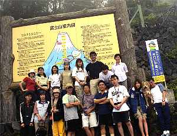
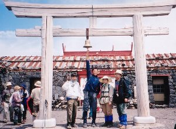

富士登山 | ２００２．０７．１９−２０／０８．３−４ |
 ご来光（雲がすごいね） | べっしーと仲間たち（３名）編 仕事が終わったら、飯食って集合。車で富士山へ。 夜１１時３０分頃から５合目をスタート。山頂を目指す。５合目でも肌寒い。７合目までは順調に登り、各小屋前で休息をとる。ただ、この辺で友人一名は、かなりまいっており（寝不足による）遅れる。 ７合目を出て「もう次は８合目か。メチャ早いな〜」なんて思っていたが、着いた先は新７合目。 「なに〜？」 以前も登っているくせに、そんなこと忘れていた私は、「８合目まで行けば半分過ぎたな」って気持ちから、「まだ半分も来てない」気分に落ち込んだ。 この辺から風が出てくる。ガスも出てくる。眼鏡が曇る。オマケにヘッドライトが霧に反射して前が見えづらい。 |
| 悪条件にさらされて、ペースが遅くなる。眼鏡を拭きたくても、拭くものが無い事に気づく。 えらく（方言か？）前が見えない。足下の石が見えなく手探りで進むって状態。ホントに。 こんな状態で友人二人に置いて行かれる。９合目で一人を追い越し、山頂手前で「目の前真っ白」状態の友人をぬいてTOPでゴール。 って言っても着いたのは４時３０分。日出ぎりぎり。 少し雲がかかっているご来光を拝み一息つく。 この後、剣が峰まで行こうとしたが、風が突風となり、体がホントに飛ばされそう（事実飛ばされてた）な為、危険と判断し中止、下山する。 |  雲の狭間 |
 ９合５尺かな？（べっしー）帰りです | いずみ編 名古屋の交流会【月酔う会】の恒例行事である富士登山に、２年連続参加（参加者２０名＋ワンコ） 富士宮口５合目駐車場に、午後３時ころ到着 仮眠タ〜イム！ 今回は、駐車場の腰壁の上のガレに、 一人で銀マットとシュラフを広げ、横になった。なかなか眠気が来ないので、空を眺めていたら、星の数が、どんどん増えてくる〜！！ 長い時間寝転んで、星空を観察するなんて、子供のころ以来〜♪あっ、流れ星〜！＼(＾０＾)／ いよいよ登山。経験・体力・気分（？）などで、 １９時３０分、２０時４５分、２２時から、それぞれがスタート時間をチョイス。私の選んだ第３陣は４名。 |
| ８合目の小屋までに、メンバーの殆どに追い付き「お先に〜」して進む。何名かは、高山病にかかり苦しそうだけれど、何もしてあげられない。。。（；_；） ８合目を出発したあたりから、ガスがだんだん濃くなる。 気がつくと鳥居が見え、無事登頂〜！９合目から２時間半もかけ、４時４５分に登頂したらしい。天候イマイチ、これではご来光は望めない。 腹ごしらえをして７時下山開始。一気に下山。数回転んだものの、無事５合目に到着〜！！ 帰り際、（富士山に）「また来年お待ちしてます♪」と言われたような・・・ 参考ＨＰリンク 「あっぱれ！富士登山」 「山旅」 |  集合です（いずみ編） |
|  鐘をならせ！！ | （のび太グループ４名） ７／２９ ぞうさん談 仮眠をして３時半起床、４時１０分くらいに出発で行きました。出発時、頭の中がまだ眠っている状態の私は６時ころ(いつも起きる時間)までは、まったくゾンビのような状態でした。 あたりが見えるころに、体調も慣れて来て「楽しい〜景色も綺麗〜！！」って大喜びで９合目まで行きました。９合目過ぎから「酸素が薄い〜、心臓がえらい〜」って状態になってきました。 ９.５合目からは１０歩歩いては５回深呼吸(特に吐く方をしっかり)しながら、「チョット休むと楽になるんだよ〜」って言ういづみさんの言葉を思い出しながら、１０歩づつ登ったように思います。 頂上についたら、天気は良いしうれしかったですよ〜。９時半でした。 なんと先に行った２人は７時半についていたらしい・・。怪獣のような人達だっ。 鳥居のあるところでちょっと休んで、測候所まで行ってきました。 ３７７６ｍの碑のところで記念撮影し、引き帰してきました。 １１時ころ下山開始しました。帰りは快適〜〜。「そらうみさん＆のび太さん」という脅威のペアに何とか付いていけるくらいのスピード(かなり速く、何度転んだことか！！)で快調に14時頃下山しました。 |